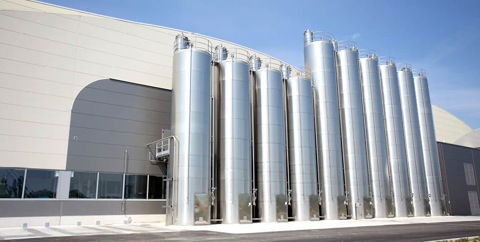
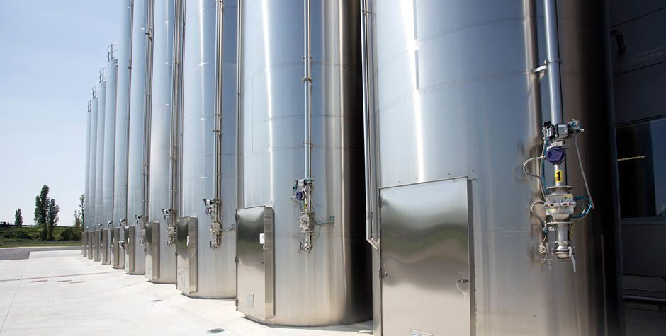
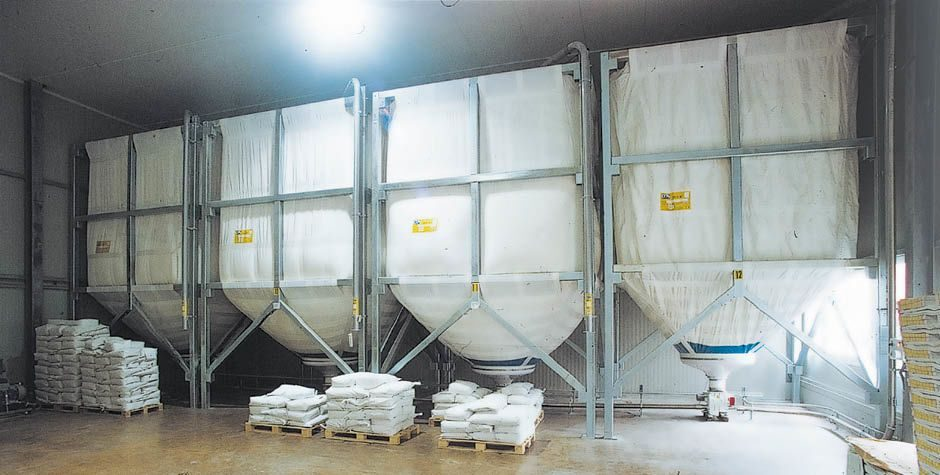
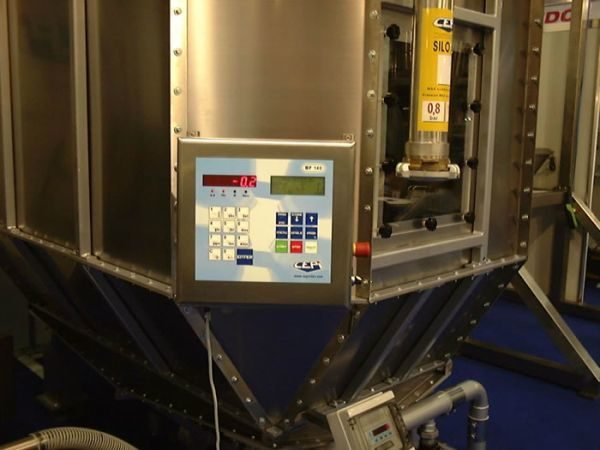
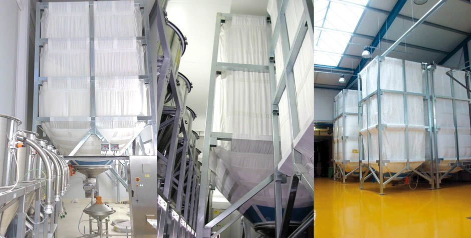
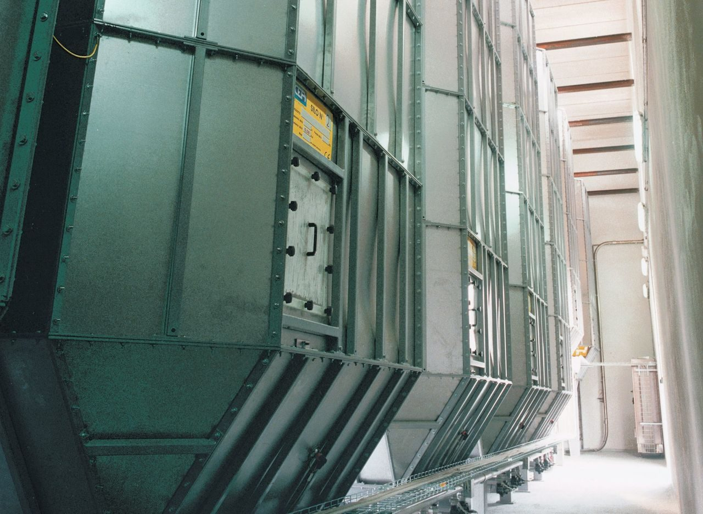
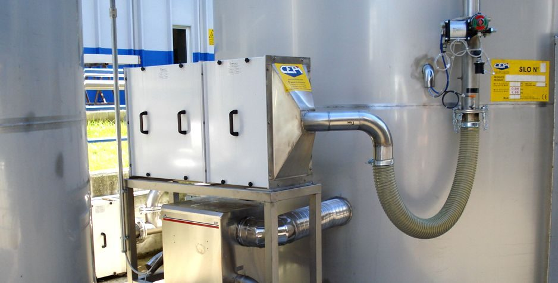
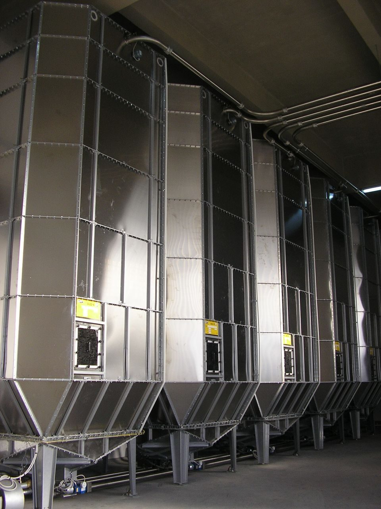
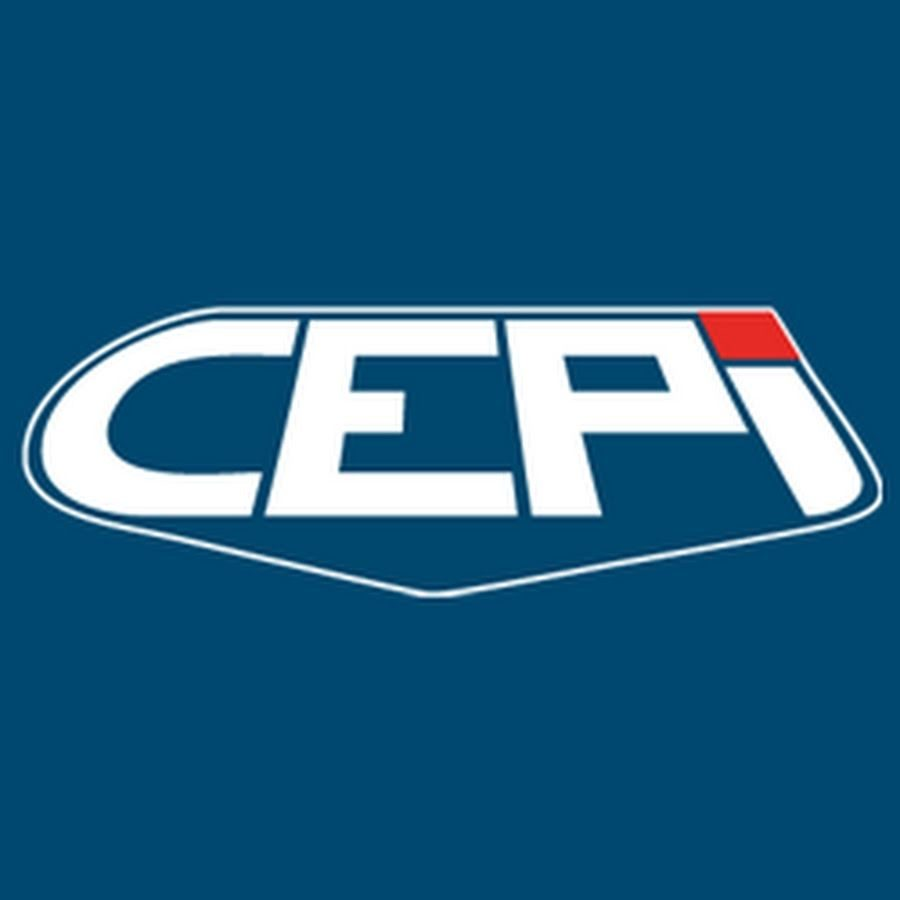

CEPI
Хранение и дозирование муки
Системы бестарного хранения, транспортирования и дозирования сырья. CEPI проектирует установки для пищевых производств с 1985 года.
- Бестарное хранение
- Подача и дозирование муки
Фотографии и схемы














Описание и комплектация
С 1985 года Cepi проектирует, производит и устанавливает «под ключ» установки для хранения, транспортировки и дозировки сырья, обслуживающие пищевую, химическую и фармацевтическую промышленность. CEPI создает индивидуальные решения для наших клиентов и сырья, которое они используют. У нас есть большая сеть партнеров и агентов на пяти континентах, благодаря отделу продаж, который сильно ориентирован на консалтинг и сотрудничество.
Наши системы отличаются мастерством и промышленной точностью. Они являются результатом глубокого понимания сырья, многолетнего опыта и доверия, которое мы создали нашим клиентам. Наше руководство объединяет компетенции в области машиностроения и механики, производства и логистики, а также глубокое знание сырья, приобретенного благодаря устойчивому присутствию на рынке. Наше предложение включает в себя высококонкурентную интегрированную автоматизацию, обеспечивающую полный контроль и отслеживание процесса. CEPI отвечает потребностям постоянно развивающегося рынка. Наши системы превосходны, надежны, разнообразны и прежде всего инновационны. Они очень гибки и известны как на национальном, так и на международном уровне.
Cepi запатентовала несколько технологий и получила множество наград за превосходство наших процедур. Мы постоянно сотрудничаем с Болонским университетом в разработке проектов, исследованиях в области механических применений и испытаний материалов, а также сертификации силосов с помощью анализа нагрузки и структурных испытаний.
Бункеры Cepi соответствуют действующим стандартам безопасности ЕС.
